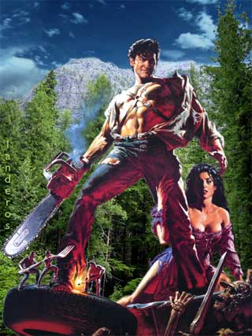

|
 
- - - - - - - - - -
Back to Nature with Bruce Campbell
An interview with the actor, filmmaker, environmentalist and Evil Dead guy.
- - - - - - - - - -
by Robert Casserly
 RECENTLY INTERVIEWED Bruce Campbell, one of Southern Oregon's most famous residents. Although well known for his work as an actor, director, and author, Bruce is much more than a popular entertainer. As his busy schedule allows, Bruce is working on a feature-length documentary about public land management in the West. RECENTLY INTERVIEWED Bruce Campbell, one of Southern Oregon's most famous residents. Although well known for his work as an actor, director, and author, Bruce is much more than a popular entertainer. As his busy schedule allows, Bruce is working on a feature-length documentary about public land management in the West.
Thank you for taking time to talk to me. Before we get down to serious stuff, may I ask why you live in Southern Oregon of all places?
I moved to Oregon after backpacking for 5 days in the Kalmiopsis Wilderness without seeing another person. It's incredible. Plus people here are not so obsessed about movies, it's not California.
I read on your Web site that you are working on a documentary.
Yes, it's called A Community Speaks. My wife Ida and I are co-producing and co-directing. We worked together a short documentary called Fanalysis a couple of years ago. But this is one is a monster, we're talking over 55 hours of footage. We got it edited down to 6 hours and are still working at it.
What's it about?
Land stewardship issues, and not just in Southern Oregon where we live, but everywhere in the West. We take one example, the Applegate Watershed, and use it as model for the big picture of Western issues. For example, we're seeing some of the biggest forest fires in history here. I walked around the Quartz fire burned area with a scientist and saw old growth trees totally incinerated because there was so much biomass on the ground. How did we end up in this situation? Litigation has everyone tied up in knots. One thing everyone agrees on is there's no agreement on the way we manage public lands, and meanwhile our inaction is causing disaster while we tap dance around the problems.
Would you call this an environmentalist film?
The point is to inform people about serious issues that are difficult to discuss reasonably, not to take any one side. We want to stick a pin in the clichés about the redneck logger, the dope-smoking hippie environmentalist, the complaisant BLM [Bureau of Land Management] manager. People are more complex than that and not so black and white. When this is all done I want to be able to look a logger in the eye and say I told your side fairly, to look a environmentalist in the eye, the BLM workers, John Q. Public -- everyone.
Who did you interview for the documentary?
You name it. That's why we got so much footage to edit. We talked to BLM officials, Forest Service people, locals who are affected by these issues, a county commissioner, World Wildlife Fund, environmentalists. The hardest part was the timber industry. We interviewed Dave Hill, a spokesperson for timber industries, because the timber company CEOs are so shy of litigation they won't go on camera. They didn't trust us that the documentary wouldn't be another skewed portrait of the issues.
When you approached these people for interviews, did they freak out at meeting a celebrity?
At least 50 percent of the people I interviewed had never heard of me. The one guy who was the most impressed was a worthless interview until he settled down.
In all the filming and interviewing for A Community Speaks, have you come to any conclusion about what we need to do about land stewardship issues?
We have to stop straining gnats and swallowing camels.
Um hmm.
Look at it logically. What can we agree on as a starting point? One, we are using wood. Two, if we just shift the problem, the problem goes to Chile or somewhere down the road, and that's just displacement, so think globally and you see we have to solve the problem here. Three, our forests are overstocked with biomass. Four, we can't burn it off, because there already too much fuel on the forest floor. Five, how do we get it out? Manually? There's 50 years of work for an army of people to reduce biomass in the public lands in Southern Oregon. We could get a co-generation company to use biomass for production if we can guarantee them supply, but lawsuits hinder that. Six, litigation just stops anything from happening, so the fuels sit there and keep accumulating.
So what do we do?
Mother Nature is the only one who knows how to do this, so we should study Native American practices. But before we can restore, we have to repair the damage we have already done through destructive logging and the equally destructive inaction of "lock it up" environmental practices. Everyone needs to think through their arguments. Maybe no one will get exactly what they want. Loggers won't get the big trees. Environmentalists won't get total inaction, leaving it to burn. The BLM will have to mediate and facilitate.
In your wildest dreams, what would be the result of the release of this documentary?
I'd love to finish this and see it get into legislators hands, teachers, environmental groups, a local screening, the BLM and Forest Service agencies have a copy, et cetera. I want to educate, not infuriate.
When do you anticipate the release?
Well, we started shooting in 2001, and are still working on it, so... it's done when it's done. The bright side of it taking so long is it allows us to have footage from multiple seasons. Keep tabs on my web site and when it's finished we'll have something there.

|